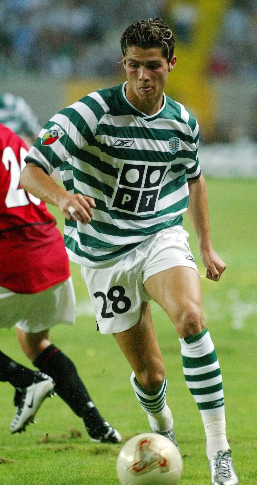
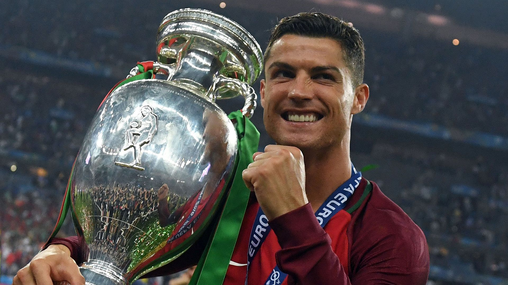
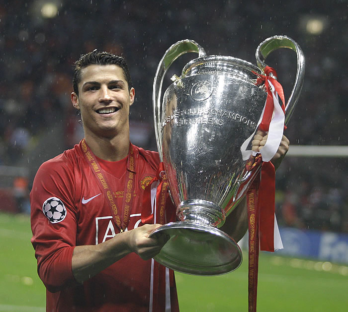
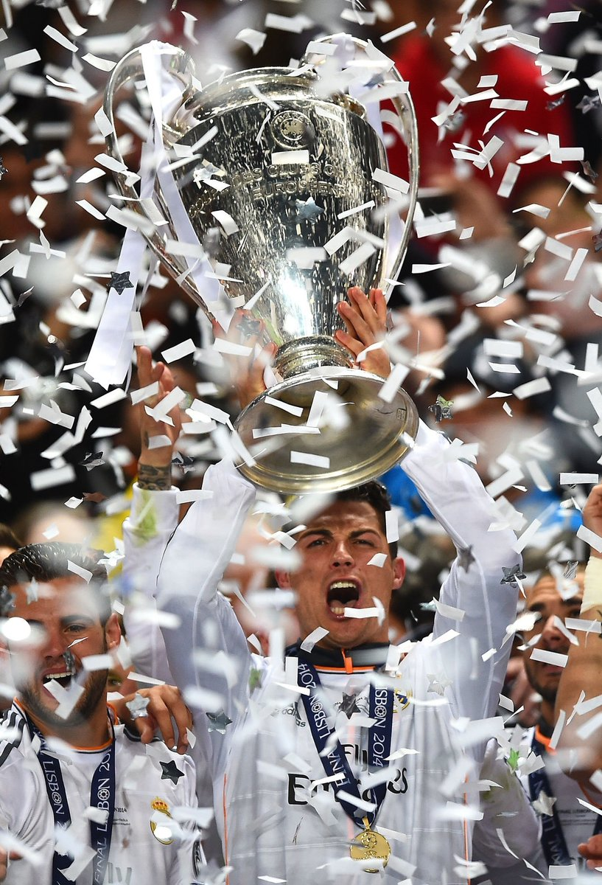
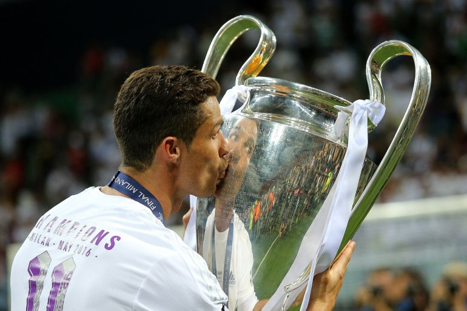
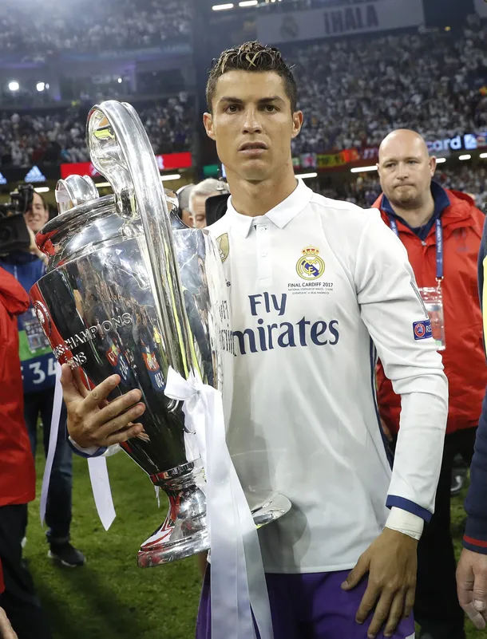
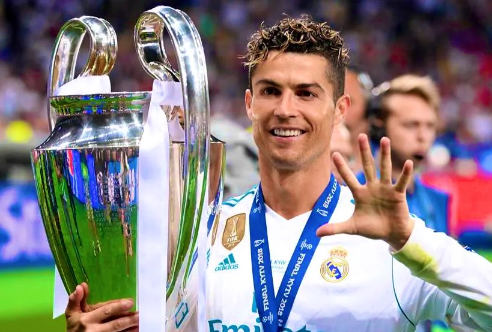

Futbolista
Se crio en un barrio obrero y a los diez años lo descubrió el Sporting de Lisboa, Cristiano Ronaldo jugaba por entonces
en el modesto Andorinha, club de su Funchal natal y en el que su padre trabajaba como utillero. Cuatro años después,
acordó con su madre dedicarse exclusivamente al fútbol. Después Ronaldo pasó al Nacional y seis meses después este realiza
la cesión de los derechos de Cristiano.En 2001, el técnico del primer equipo, el rumano Laszlo Boloni, quiso que debutara
ese mismo año, pero un test lo desaconsejó por no estar lo suficientemente trabajado. Un año después lo hacía debutar en
la previa de la Champions ante el Inter.

Considerado con frecuencia el mejor y más completo futbolista, así como el mayor goleador del mundo, además de uno de los mejores
de todos los tiempos, es uno de los futbolistas más laureados de la historia, habiendo ganado, entre otras distinciones,
cinco veces el Balón de Oro, cinco premios de la FIFA al mejor jugador del mundo y cuatro Botas de Oro. En 2020, tuvo el honor de
ser elegido el mejor Jugador del Siglo xxi en la gala de los Globe Soccer Awards, convirtiéndose en el primer futbolista europeo y
el primer portugués en recibirlo, además de ser incluido en el Dream Team del Balón de Oro.

Selección portuguesa
Con la selección de Portugal Cristiano Ronaldo formó parte del ataque junto a Quaresma, Helder Postiga y Hugo Viana en la selección sub-21 y derrotaron a Inglaterra. En junio fue la estrella del combinado sub-20 que conquistó el prestigioso torneo de Touloun batiendo en la final a Italia por 3-1. Felipe Scolari lo hizo debutar con la selección absoluta el 20 de agosto de 2003 ante Kazakhstan, con dieciocho años sustituyó a Luis Figo, uno de sus ídolos. El 8 de Septiembre de 2020, se convirtió en el Primer jugador Europeo en la Historia del Fútbol de Selecciones en marcar 100 goles. 
CHAMPIONS GANADAS
- CHAMPIONS 2007/2008 
- CHAMPIONS 2013/2014 
- CHAMPIONS 2015/2016 
- CHAMPIONS 2016/2017 
- CHAMPIONS 2017/2018 